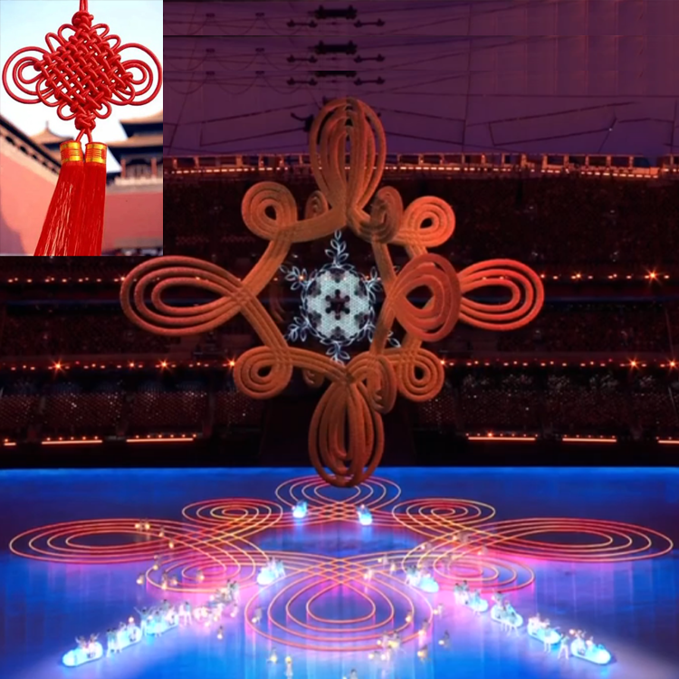
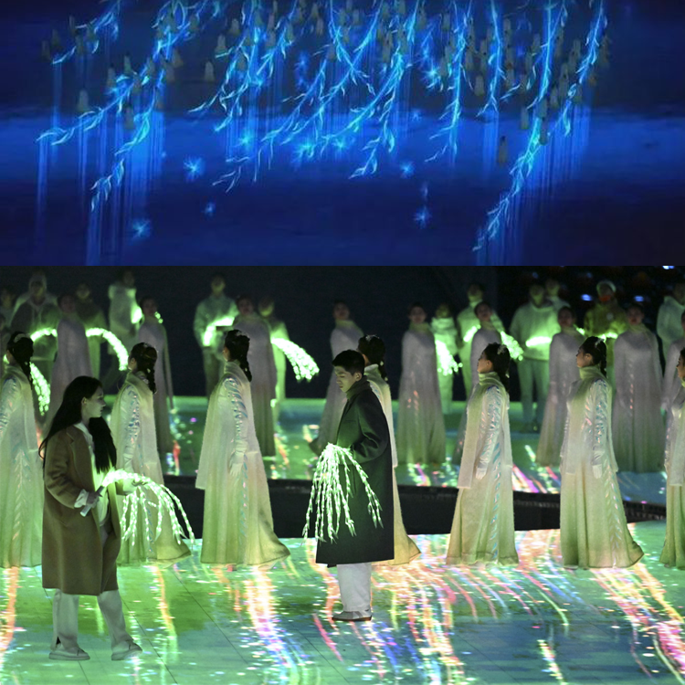
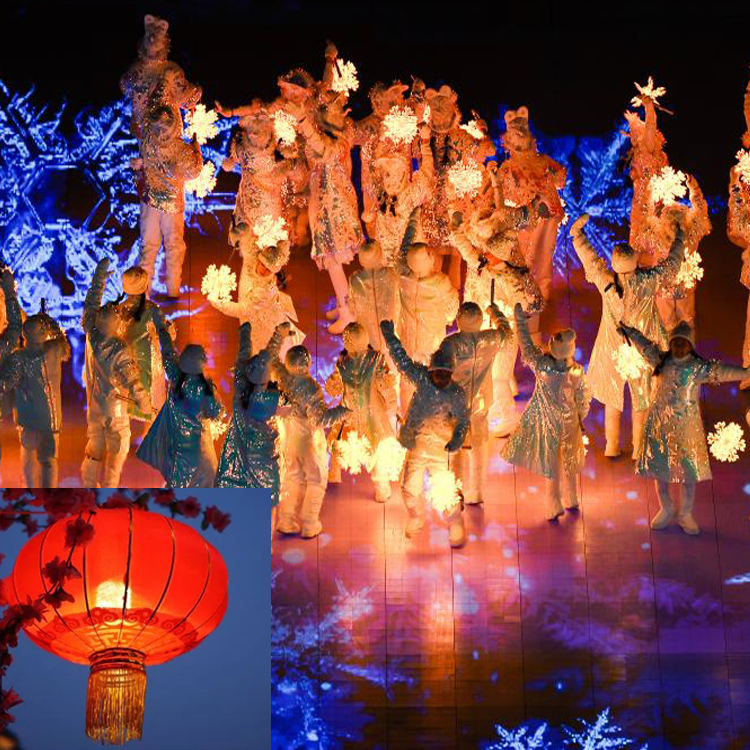

返回

2022北京冬奥会闭幕式
中国结
中国结通常反映着中华民族的智慧和文化，体现着中华民族的文化精髓和民族特质，寓意着团圆、美满。本次闭幕式上出现中国结，一是令中国红、中国结再次出圈，弘扬中华文化；二是给予本次闭幕式和全体运动员们，团圆、美满等美好的寓意。

2022北京冬奥会闭幕式
折柳送别
折柳送别，用中国式浪漫表达了对所有运动员依依不舍的情感。折柳送别发源于西汉都城长安，代表人类一切最朴素、最真挚的情感，这就是中国给全世界的浪漫，期待所有人带上这条柳枝带走中国人民的友情，年年柳色，灞陵伤别。

2022北京冬奥会闭幕式
雪花灯笼
灯笼是极具代表性的中国元素，恰好元宵节刚过，年味还在。在冰冷的寒冬，点亮一盏灯笼，很温暖，同时也像是冰与火的激情碰撞。灯笼是引导，同时也点亮了一条路，一条‘回家’的路，让运动员感受到家的温暖。